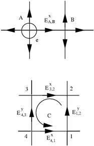

	  <li>November 2005: <a href= "nano.pdf"> Nano</a></li>
	  <li>June 2005: <a href= "tip3p.pdf"> TIP3P</a></li>
	  <li>May 2005: <a href= "lattice_spreading.pdf"> Extended charges </a></li>
	  <li>July 2004: <a href= "sp7.pdf"> Cluster algorithms</a></li>
	  <li>December 2003: <a href= "elecmd.pdf">Molecular Dynamics</a></li>
	  <li>August 2003: <a href= "joerg.pdf">Off-lattice Monte-Carlo</a></li>
	  <li>April 2003: <a href= "aux.pdf">Auxiliary field Monte-Carlo for charged particles</a></li>
	  <li>2002: <a href="elec.pdf"> Simple lattice implementation
	  <li>2002 <a href="hydro.pdf">Relaxational dynamics
	    <p align="center"></p>
